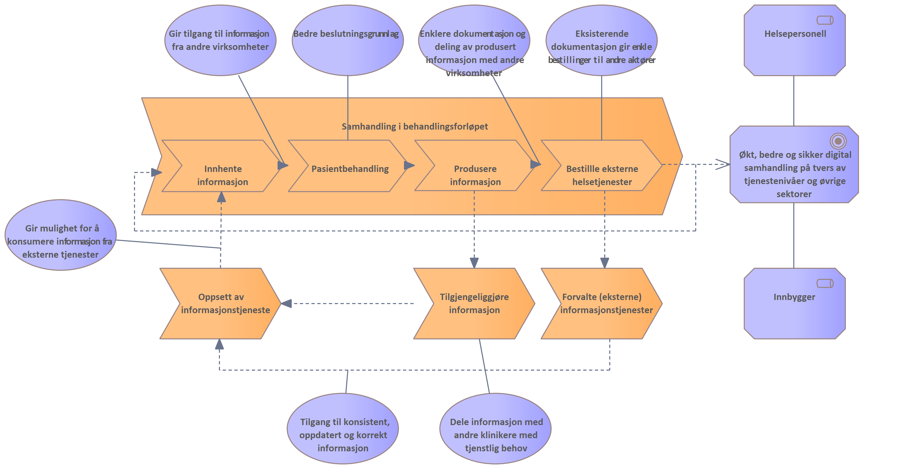

Målbilde for DHO
| Status | Version | Maturity | Normative level |
|---|---|---|---|
| Work in progress | v0.8 | review | ikke normert |
Kapittelet beskriver de overordnede strategiske målene for DHO arbeidet. Utviklingen av målarkitektur for samhandling innen DHO er en hovedleveranse fra Tiltak 5 i DHO arbeidet.
Målbildet på strategisk nivå for DHO er beskrevet i Veien videre for Nasjonalt velferdsteknologiprogram og Digi-hjem 2022-2024. Modellen viser sammenhengene mellom overordnede samfunnsmål definert for området. Det er også identifisert eksisterende barrierer for utbredelsen av velferdsteknologi og effektiv utnyttelse av DHO i helse og omsorgssektoren.

Resultatmål
Vi konkretiserer ikke resultatmål i dette arbeidet utover det som er beskrevet i Veien videre for Nasjonalt
velferdsteknologiprogram og Digi-hjem hvor dette er behandlet og det er listet opp en rekke resultatmål for arbeidet. Vi gjengir de som er mest sentrale for Tiltak 5 her:
- Behov for informasjonsdeling knyttet til bruk av velferdsteknologi og digital hjemmeoppfølging er innen utgangen av 2024 ivaretatt i planene og leveransene for normerende produkter og nasjonale samhandlingsløsninger, og det er etablert varige strukturer som ivaretar tjenestens behov for videreutvikling etter programmets slutt.
- Det er konsensus om definisjoner og terminologi knyttet til velferdsteknologi og digital hjemmeoppfølging innen utgangen av 2022.
- Det er utviklet en løsning i kjernejournal og helsenorge som sektoren har tilgjengelig, som er integrert med tjenestens eget fagsystem (eks EPJ) og som har tilgjengelig funksjonalitet for egenbehandlingsplan i løpet av kommende programperiode.
- En varig struktur er etablert som beskriver fordeling av nasjonale roller og ansvar for videre tilrettelegging for bruk av velferdsteknologi og digital hjemmeoppfølging ved utgangen av 2024.
- Teknisk løsning og veiledning for flerparts videoløsning er tilgjengeliggjort i løpet av2022.
- Videreføre og videreutvikle møtearena mellom myndigheter, aktører i helse- og omsorgssektoren og det private leverandørmarkedet i løpet av programperioden.
Tiltak innen DHO frem til 2024
Digitaliseringstiltakene innenfor tiltak 5 er definert til å være:
- Definere en overordnet arkitektur for datadeling - Målarkitektur for samhandling innen Digital hjemmeoppfølging (dette tiltaket)
- Koordinere arbeid med FHIR-profilering innen digital hjemmeoppfølging i sektor
- Utvide dagens utprøving av datadeling som også omfatter samhandling mellom primær- og spesialisthelsetjenesten
- Råd og veiledning som dekker behov hos både spesialist- og primærhelsetjenesten.
- Videreutvikle velferdsteknologisk knutepunkt
Verdistrøm for samhandling i behandlingsforløpet
Formålet med effektmålet "økt, bedre og sikker digital samhandling på tvers av tjenestenivåer og øvrige sektorer" er å gi verdi for sluttbrukere som helsepersonell og innbygger.
Modellen viser en overordnet verdistrøm med fokus på verdi som effektmålet kan gi for helsepersonell og innbygger involvert i et behandlingsforløp.
